1、操作符差异
1.1 符号对比
符号名称 易语言 火山 注释 点 . . 用来作为分隔类/类对象与其成员名称。
譬如：编辑框1.内容
方法符小括号 () () 其作用是提供调用方法时所需要的参数表，无论方法是否有参数都需要输入括号。
譬如：信息框()
参数分隔符 , , 本符号用于分隔参数表中的各个参数。
譬如：某方法(参数1,参数2,参数3)
数组符号 [] [] 用于表示数组类型。
注：火山视窗中数组下标从0开始。
注释符 ' // 用于表达注释信息。 双引号 “ ” " " 用于表达字符串立即数。 注：火山视窗中必须是英文状态下的双引号。
单引号 无 ' ' 用于表达字符立即数 转义符 无 \ 用于转义文本操作
1.2 点
点即〝 . 〞此符号在火山中有两个作用，一是用于建立包/类的全名称，二是用来作为分隔类/类对象与其成员名称。
如下图所示：
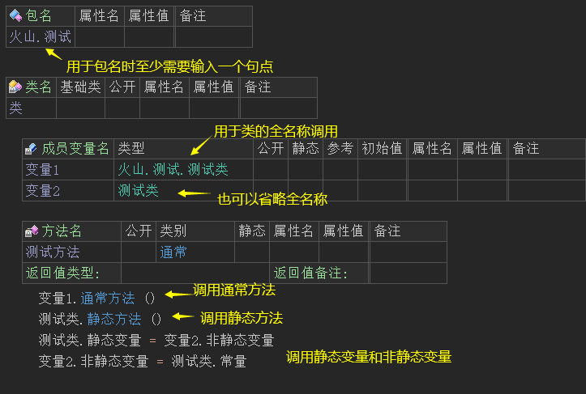
在输入句点时会激活火山代码提示，和易语言效果一致。
易语言效果演示：
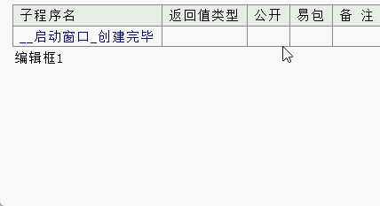
火山效果演示：
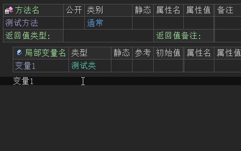
1.3 方法符小括号
方法符即〝 ( ) 〞 ，其作用和易语言中一致，提供调用方法时所需的参数表。
易语言效果演示：
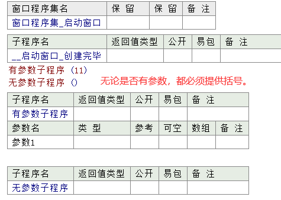
火山效果演示：
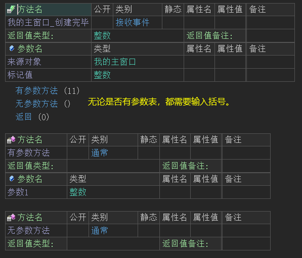
1.4 参数分隔符
参数分隔符即〝 , 〞，必须是英文状态下的逗号。本符号用于分隔参数表中的各个参数。
易语言演示：
“子程序1”存在三个参数就需要输入两个逗号。
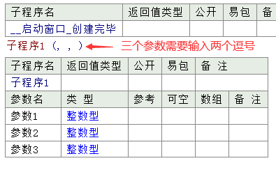
火山演示：
“通常方法2”存在三个参数就需要输入两个逗号。
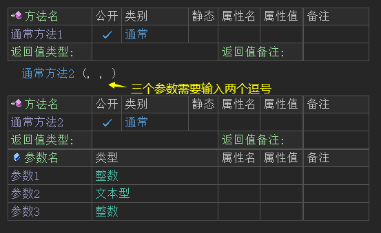
参数分隔符也是可以省略的，假如最后一个参数存在默认值，如果你不需要输入这个参数可以省略。
如下图所示：
“通常方法2”的第三个参数存在默认值，如果调用此方法时，不需要输入这个参数，可以省略一个逗号的输入。
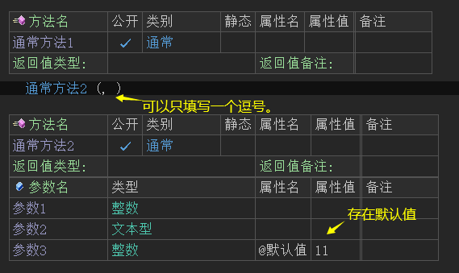
需要注意的是，如果被调用的方法是“支持以动态格式调用的静态方法”，那么参数逗号数量则根据调用方式动态选择。
如下图所示：
通过变量调用需要输入三个参数，通过类名调用需要输入四个参数。
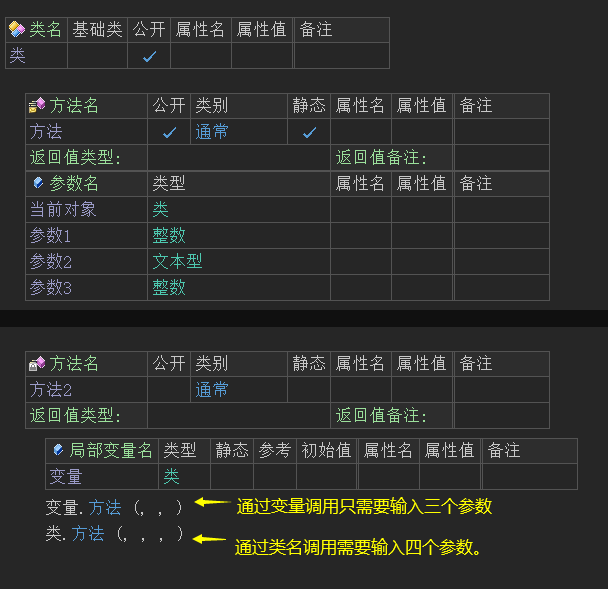
如果你不太确定到底需要输入几个逗号来分隔参数，可以如下图所示：
在方法中输入逗号时，注意观察参数名称的颜色变化，当参数名称颜色非白色时，证明当前要输入的参数为此参数，从而可以判定要输入几个逗号。
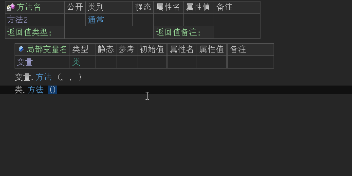
1.5 数组符号
数组符号即〝 [] 〞，用于表示数组类型，在火山中需要将其填写到类型一栏才可以表示数组。
易语言数组定义演示：
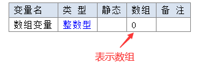
火山数组定义演示：
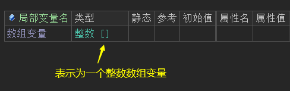
数组下标（索引）：
在易语言中数组下标从1开始，提供1表示为数组第一个成员，如下所示：
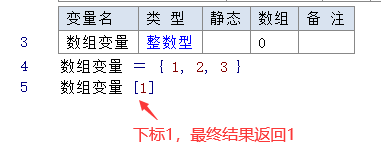
在火山中数组下标从0开始，如下图所示：
“数组变量[0]”最终值将为“1”，如果下标提供1则此数组变量的最终值将返回2，以此类推。
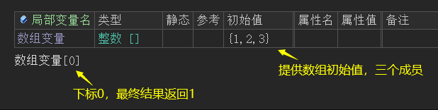
下标除了用于访问成员外还可以替换成员，如下所示：
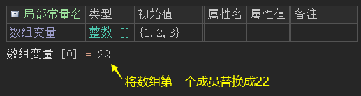
数组符号中还可以提前设置数组成员数量，如下所示：
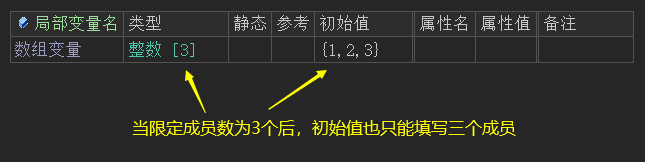
多维数组定义及赋值：
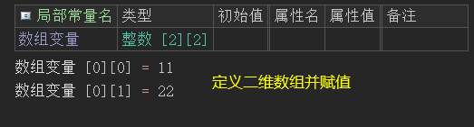
注：在火山视窗暂不支持参数和返回值使用数组。
1.6 注释符
在易语言中注释符使用' 表示，并且只能注释代码语句。
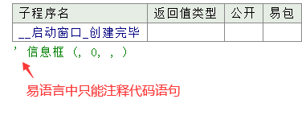
在火山中注释符即〝 // 〞用于表达注释信息，想比易语言强大很多，它可用于类名、变量、常量、方法名、参数和方法语句的注释。
如下图所示：
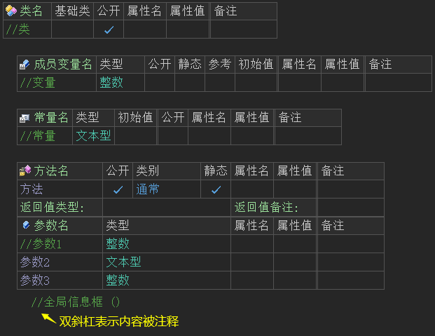
1.7 双引号
在易语言中双引号需要使用中文引号，用于表达字符串立即数。
如下所示：
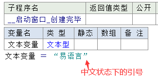
在火山中，必须是英文状态下的双引号。用于表达字符串立即数，可用于变量、常量的初始值以及变量的赋值中。
如下图所示：
字符串立即数中也支持转义符操作，这是易语言所不具备的功能。
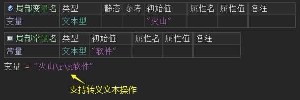
1.8 单引号
单引号即 〝 '' 〞 ，易语言中并无此符号，在火山中用于表达字符立即数，可用于变量、常量的初始值以及变量的赋值中。
如下图所示：
字符立即数中支持转义符操作。
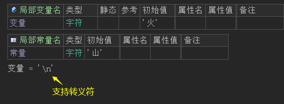
1.9 转义符
转义符即〝 \ 〞，易语言中并无此符号，在火山中用于转义文本操作，例如：“\r\n”可以用来表示文本换行，相当于易语言中的“#换行符”。
如下图所示：
字符串立即数表达需要使用英文状态下的双引号，如果需要在字符串立即数中表达同样的双引号文本就需要进行转义操作，便于程序编译器识别信息。
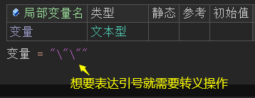
转义字符表：
转义符 解释 \b 退格符 \f 换页符 \r 回车符 \n 换行符 \t 水平制表符 \' 单引号 \" 双引号 \\ 反斜杠 \x 后跟1-3个十六进制字符,为所对应字符的代码值.
2、运算符
2.1 运算符号对比
符号名称 易语言 火山 注释 四则运算 ＋－ × ÷ + - * / 进行数学四则运算 取反符 － - 用作返回将指定数值进行符号翻转后的结果值 强制类型转换符 无 ( ) 用作将数据强行转换到所指定的数据类型 求余运算符 ％ % 用于用于取出一个数和另一个数相除的余数 且 且 && 用于并且逻辑操作，当左侧参数和右侧参数均为逻辑值真时，最终整个表达式的结果返回真。 或 或 || 用于或者逻辑操作，当左侧参数或右侧参数其中任意一个的逻辑值为真，最终整个表达式的结果返回真。 小于等于 ≤ <= 当左侧参数小于等于右侧参数时返回真 大于等于 ≥ >= 当左侧参数大于等于右侧参数时返回真 小于 ＜ < 当左侧参数小于右侧参数时返回真 大于 ＞ > 当左侧参数大于右侧参数时返回真 不等号 ≠ != 当左侧参数不等于右侧参数时返回真 相等号 ＝ == 用于比较左侧参数与右侧参数是否相等 赋值运算符 ＝ = 用于将右侧的参数值赋予给左侧参数内容
2.2 四则运算符
在易语言中对四则运算的乘和除使用的是数学运算的×和÷，在火山中采用了和其它编程语言一致的*表示乘、/表示除。
易语言演示如下：
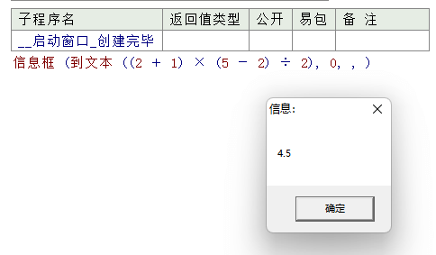
火山视窗演示如下：
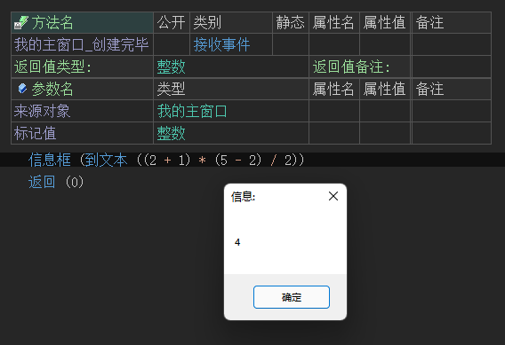
在上述计算中，最终值应当为3 * 3 / 2 = 4.5，但是为什么显示为4呢？这是因为在火山平台中，其最终的计算结果数据类型由表达式中参与运算的各个数值的最大精度决定，譬如计算过程中所有数值均为整数，则最终结果值也将被剪切到整数(不管计算结果是否存在小数)，如果表达式中存在一个是小数类型，则最终结果值将为小数。
因此上述计算公式想要得到正确的结果，只需要将其中任意一个数值声明小数即可。
声明方式有两种分别如下：
可以直接将某个数值改成小数类型。
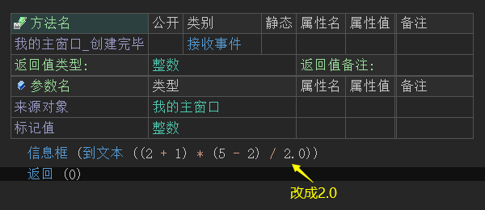
如果为整数变量，可以采取强制转换的方式，强制转换成小数。
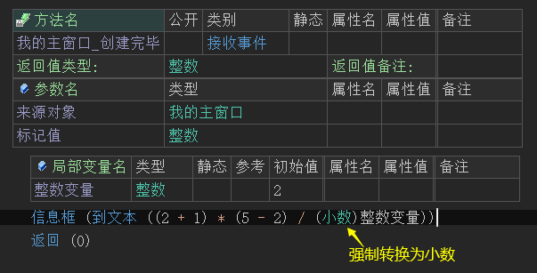
最终正确结果如下：
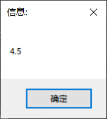
对于加号符，除了进行数学运算外，还可以用于连接文本数据，如下所示：
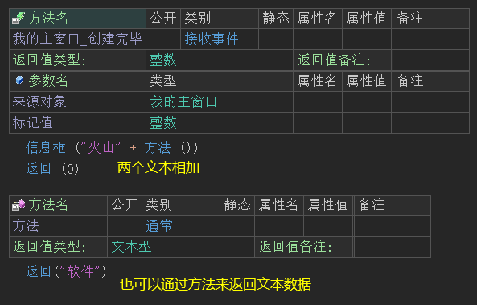
最终结果：
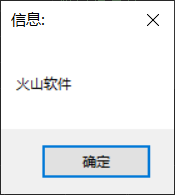
注：除文本和数值数据外，其它类型均不支持相加。
2.3 取反运算符
算术取反操作符即〝 - 〞，在火山中和易语言的作用一致，用作返回将指定数值进行符号翻转后的结果值。
易语言演示：
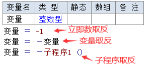
火山演示：
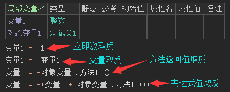
2.4 强制类型转换符
易语言中并无此符号，此符号为火山新增功能。
强制类型转换符即〝 ( ) 〞，用作将数据强行转换到所指定的数据类型。
调用格式为: (欲强行转换到的数据类型)欲转换类型的数据。
允许以下数据类型之间进行强制转换：
(1) “空对象”可以强制转换到任何非常量类的类数据类型或文本型：
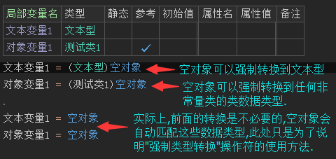
(2) 数值数据类型之间可以强行转换。
注意: 当从容量大的数值数据类型强制转换到容量小的数值数据类型时，其中数值精度将会存在被丢失的风险。譬如，将小数数值强行转换到整数数值将丢失所有小数点后面的数值部分。
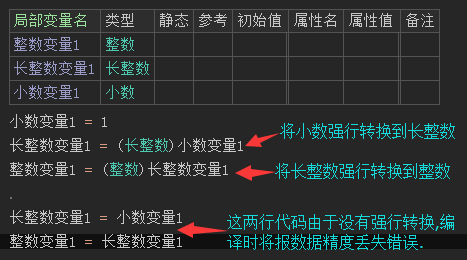
(3) 常量类可以强制转换到其所对应的基本数据类型(普通用户知道一下即可,无需过多了解)。
(4) 类数据类型只能强制转换到其直接/间接基础类或继承类。
注意: 用户必须确保对象实例的运行时数据类型匹配该被强行转换到的数据类型，否则将导致程序运行时出错。
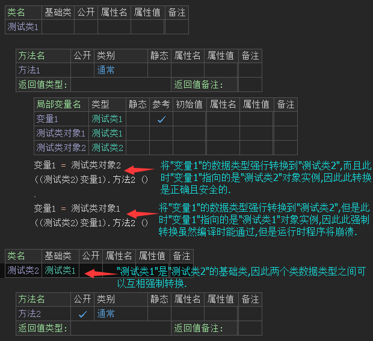
2.5 求余运算符
求余运算符即〝 % 〞，与易语言效果一致，用于用于取出一个数和另一个数相除的余数。
易语言演示：
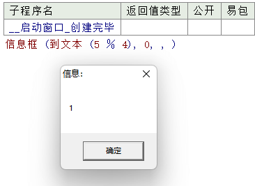
火山演示：
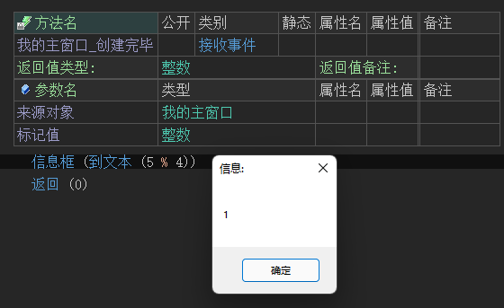
2.6 关系运算符且
“&&”和易语言中的“且”作用一致，都是用于并且逻辑操作，当左侧参数和右侧参数均为逻辑值真时，最终整个表达式的结果返回真。
易语言演示：
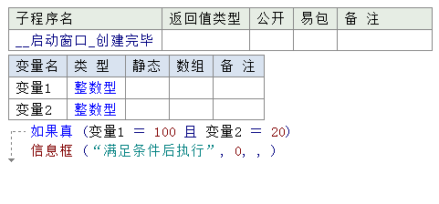
火山演示：
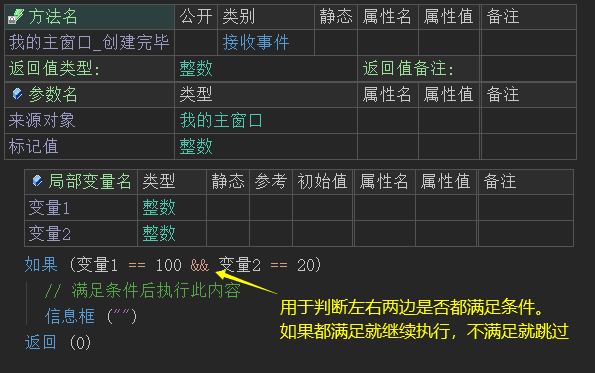
上述例子的最终运行结果并不会执行信息框，因变量1不等于100并且变量2也不等于20。
输入字：
在火山中除了直接输入字符外，还可以输入“qie”来输入此符号。
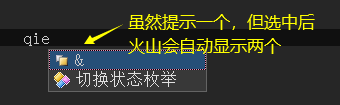
2.7 关系运算符或
〝 || 〞和易语言中的“或”作用一致，都是用于或者逻辑操作，当左侧参数或右侧参数其中任意一个的逻辑值为真，最终整个表达式的结果返回真。
易语言演示：
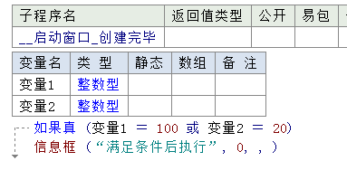
火山演示：
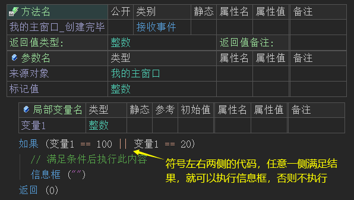
上述例子的最终运行结果并不会执行信息框，因变量1不等于100也不等于20。
输入字：
在火山中除了直接输入字符外，还可以输入“huo”来输入此符号。
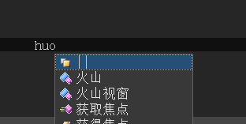
2.8 关系运算符小于等于
小于等于和易语言中输入的符号一致，都是输入“<=”，不同之处为易语言会自动转换成“≤”火山会保持原样，其作用都是当左侧参数小于等于右侧参数时返回真。
易语言演示：
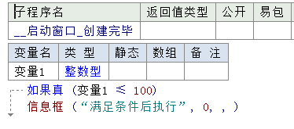
火山演示：
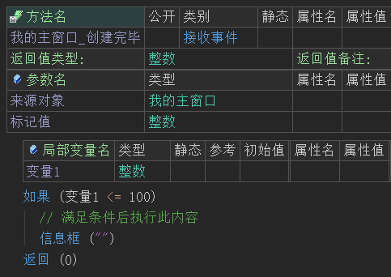
上述例子的最终运行结果会执行信息框，因变量1默认值为0，满足小于等于100的条件。
2.9 关系运算符大于等于
大于等于和易语言中输入的符号一致，都是输入“>=”，不同之处为易语言会自动转换成“≥”火山会保持原样，其作用都是当左侧参数大于等于右侧参数时返回真。
易语言演示：
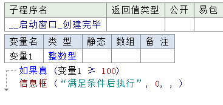
火山演示：
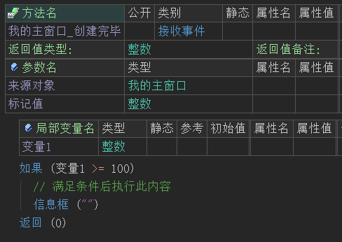
上述例子的最终运行结果不会执行信息框，因变量1默认值为0，不满足大于等于100的条件。
2.10 关系运算符小于
小于和易语言中输入的符号一致，都是输入“<”，不同之处为易语言会自动转换成全角符“＜”火山会保持原样，其作用都是当左侧参数小于右侧参数时返回真。
易语言演示：
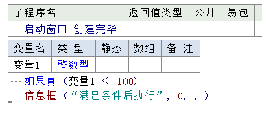
火山演示：
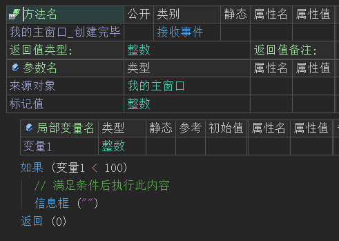
上述例子的最终运行结果会执行信息框，因变量1默认值为0，满足小于100的条件。
2.11 关系运算符大于
大于和易语言中输入的符号一致，都是输入“>”，不同之处为易语言会自动转换成全角符“＞”火山会保持原样，其作用都是当左侧参数大于右侧参数时返回真。
易语言演示：
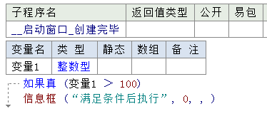
火山演示：
上述例子的最终运行结果不会执行信息框，因变量1默认值为0，不满足大于100的条件。
2.12 关系运算符不等号
在易语言中不等号可以输入“!=”也可以输入“<>”来表示不等于，但是最终都会转换成不等号“≠”。
易语言演示：
在火山中不等号只能输入〝 != 〞并且不会转换成其它符号，其作用和易语言一致，都是当左侧参数不等于右侧参数时返回真。
注意：
(1) 对于数组对象，唯一能够与其进行比较的是“空对象”；
(2) 对于文本数据，将比较两者实际文本内容是否相同(区分字母大小写)，也可以将文本数据与“空对象”进行比较；
(3) 类对象比较仅比较两者是否指向同一个对象实例，而不会去对比两者所指向对象实例中存放的数据内容是否相同(火山安卓平台比较两个对象是否参考到同一对象实例，火山视窗平台比较两个对象的所处内存地址是否相同)。
在火山视窗平台中：
(1) 如欲比较两个对象的数据内容是否相同，可以使用系统类库中所提供的“对象内容是否相同()”全局静态方法；
(2) “字节集类”是一个特例，该类的对象之间进行比较将比较两者的实际数据内容是否相同。
如下图所示：
2.13 相等号
比较左侧参数与右侧参数是否相等，在易语言中使用一个等于号，在火山中需要使用双等号，即〝 == 〞，其使用方式和注意事项与“不等号”相同，将上述图中的“!=”换成“==”即可。
在实际使用时，输入一个等于号即可，火山会自动转换为双等号，如下：
而易语言只需要提供一个等号即可：
2.14 赋值运算符
赋值符和易语言中的符号一致，即〝 = 〞，都是用于将右侧的参数值赋予给左侧参数内容，可用于变量、写属性等。
易语言演示演示：
火山演示：